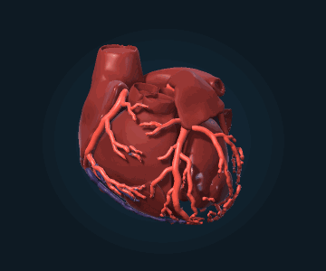
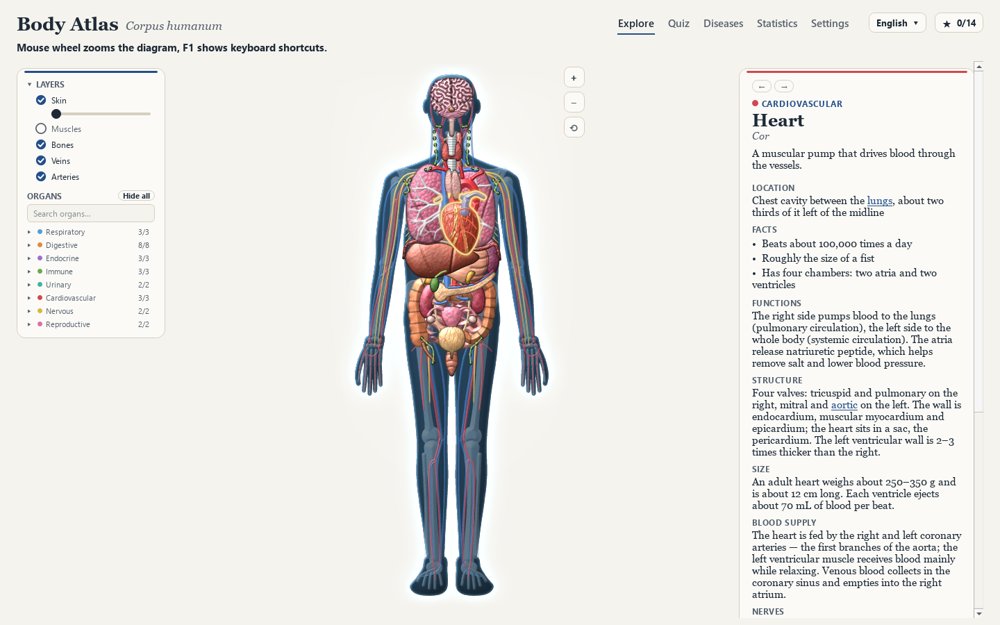
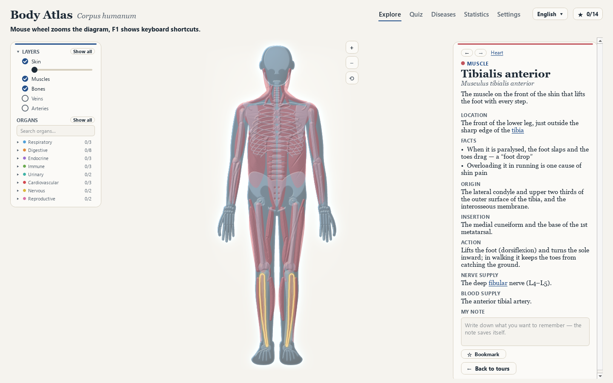
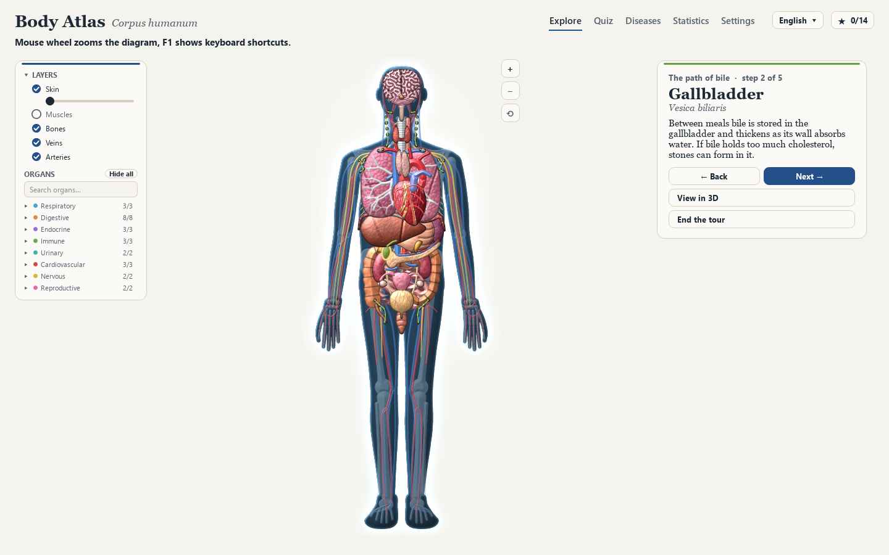
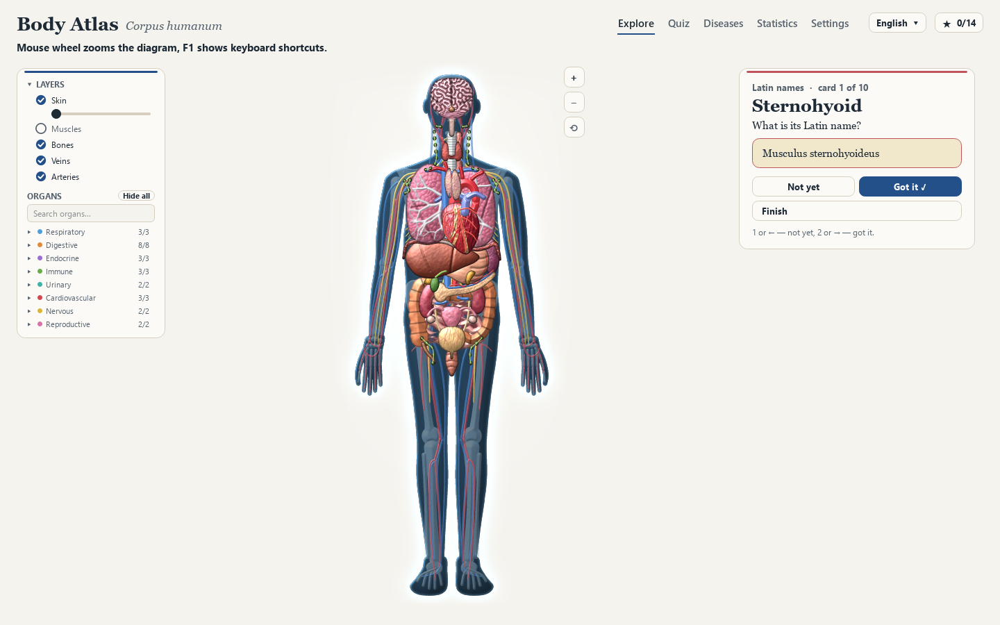
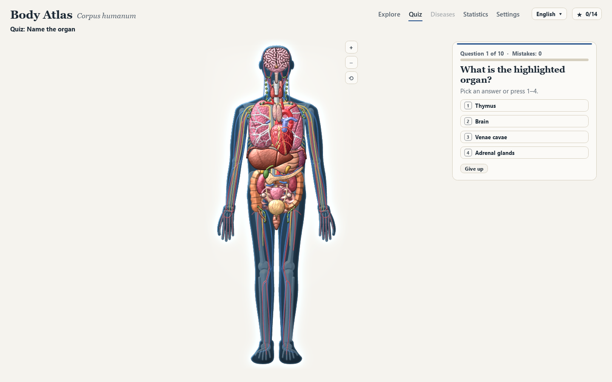
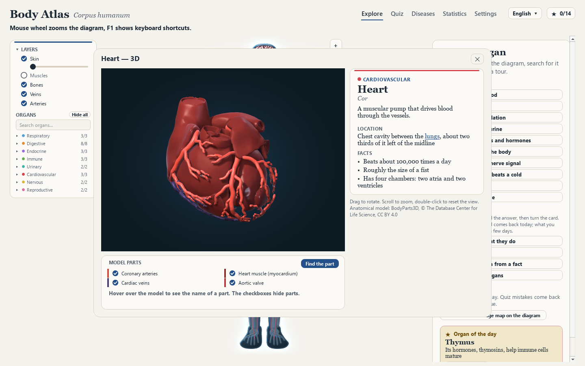
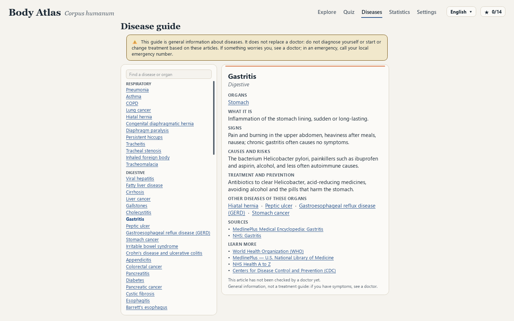
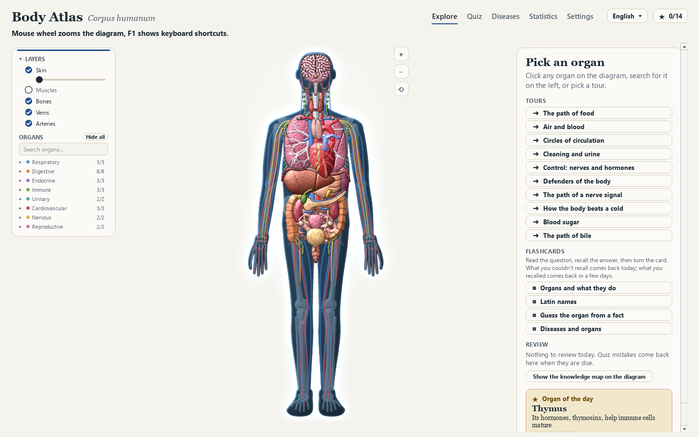
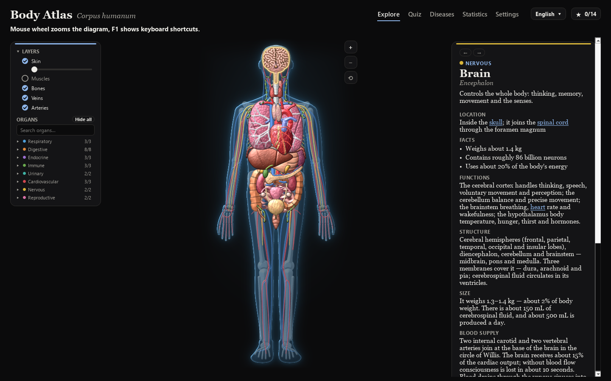

Hover and click a full-height body map, read organ, bone and muscle cards, follow guided tours, drill flashcards, play nine kinds of quiz and turn 3D anatomical models — in English or Russian, with Latin names.

The heart in the 3D view (BodyParts3D model)
A full-height figure with skin, muscles, bones, vessels and organs. Hide any layer or organ, search by name, zoom with the wheel. The heart beats and the lungs breathe.
What an organ does, its structure, size, blood and nerve supply, facts and diseases — with links between cards, your own notes and bookmarks.
The path of food, air, blood and bile, a nerve signal from a finger to the brain, how the body beats a cold, blood sugar and more — step by step on the map.
Organs, Latin names, facts and diseases with spaced repetition: what you couldn't recall comes back today, what you knew comes back in a few days.
Find the organ, name it, guess from a fact or a rotating 3D model, bones and muscles, routes in order, a mixed game, a graded exam and a daily challenge.
96 articles linked to the organs, each with its sources — MedlinePlus, NHS, WHO fact sheets and more. Educational, not a substitute for a doctor.
Anatomical meshes from open atlases, rendered on the GPU. Hide parts, read their names under the cursor, and play “Find the part”.
Accuracy by quiz and by body system, your last games, weak spots to train and a knowledge map that colours organs by how well you know them.
Five themes, interface scaling, full keyboard control, reading a card aloud and a short tour of the window on the first launch.








Get the latest version from the Releases page:
OrganismAtlas-Setup-…exe: open it, choose a folder and click Install.OrganismAtlas-…-macos.zip: unzip and open the app (it is unsigned: right-click → Open the first time).OrganismAtlas-…-linux.tar.gz: unpack and run OrganismAtlas/OrganismAtlas.Or run it from source with Python 3.10+:
pip install -r requirements.txt python run.py
3D models: BodyParts3D (© The Database Center for Life Science, CC BY 4.0), Human Reference Atlas (HuBMAP, CC BY 4.0), SPL Head and Neck Atlas (Open Anatomy) and Z-Anatomy (CC BY-SA 4.0) — details.